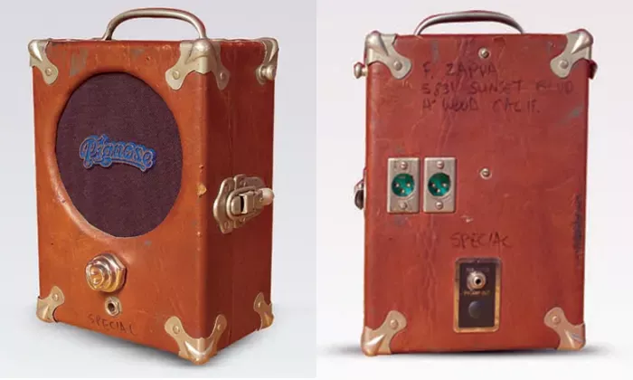
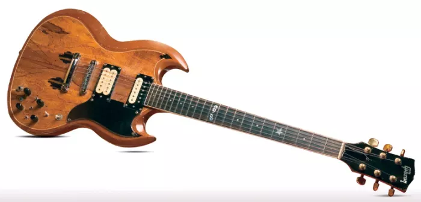
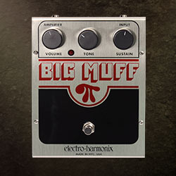
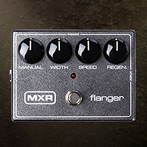
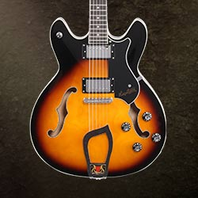

Pignose Amp
Responsible for Apostrophe(’) and Over-Nite Sensation guitar tones

“Baby Snakes” Gibson SG
Zappa's main guitar for the latter part of the Seventies. Sold to Zappa by "a guy in Phoenix" for $500

“Electro-Harmonix Big Muff Pi
Zappa uses this pedal for its fuzz, though it did not escape his heavy modification and had its internals gutted

MXR M117R Flanger
Zappa valued flange and used this flanger to define his late '70s and early '80s tone

Hagstrom Viking
Passed on to his son, Dweezil Zappa, Frank often played on this model